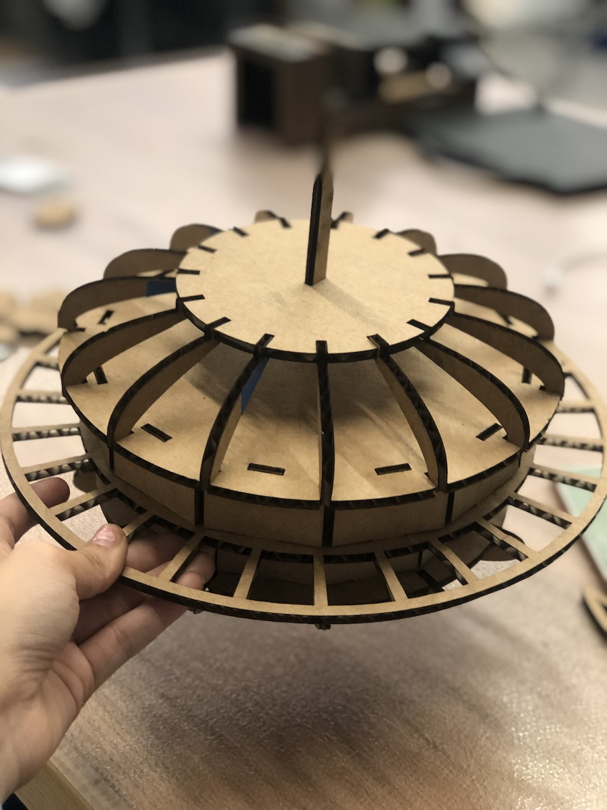

Phone
+1 857 209 6440
Email
rebei@mit.edu
Parametric Modeling and Computer Controlled Cutting
Parametric Model of the Seattle Space Needle and Vinyl Laptop Sticker

Design Process
Summary
I was in Seattle interning this past summer and I could see the space needle from my appartment. I recreated the Seattle Space Needle design parametrically with cardboard because I love and miss seattle!
What I Used
- Fusion 360
- Lazer Cutter
- Vinyl Cutter
First, I had to study how the space needle looked like. I first planned on how I was going to make it by sketching it out to give me a basis on the CAD and to help me quickly visualize how I am going to build it. I decided to make layers of circles and use various curved and rectangular connections to connect all of the levels together. Eventually, I only created the top of the needle because I didn't want my model to be too big but I also went ahead and sketched out how the bottom would be created as well.
Sketching The Pieces
Parametrically Designing Parts in Fusion 360
I have never actually parametrically designed anything yet in Fusion before. Parametric modeling is a modeling process with the ability to change the shape of model geometry as soon as the dimension value is modified. Parametric modeling is implemented through the design computer programming code such as a script to define the dimension and the shape of the model. I realized that this would be extremly helpful when you want to make many different scales of the same model easily. I decided to build this model from the bottom up, so I started from the bottom circular base and worked my way up. Here is my final model.
I would say one of the most important dimentions in creating this model was the board thickness of the cardboard that we were going to cut. In order for all the pieces to fit together without any glue, this dimention had to be precise because I designed my model to be press fit everywhere. I measured the board thickness with a pair of callipars and used that throughout my model. I added a little bit of clearance so the pieces wouldn't have a hard time fitting together but not too loose that they would fall apart.
Rendered Views
Printing Pieces On the Lazer Cutter
In fusion, to export DXF files, you need to do it sketch by sketch which was a little time consuming. Fusion is also not able to open the .DXF files without first uploading it to their online Autodesk file viwer which also took even more time to edit extra lines. Before getting to the print screen, you have to upload all of your DXF files and color them red and change the thickness of the lines to "hairline". Then just press print and make sure to change the preferences. In the preferences, I selected "Mat Board" and changed the thickness of the material to the thickness I measured before. Then I got to this screen.
Before printing, I had to make sure the piece of cardboard that I cut was properly taped down and that the lazer was focused by moving up and down the bed. After that was done, I started printing by designs! This was the first time I've used a lazer cutter so it was exciting to see something cut so fast.
Cut Parts
Assembly
The assembly of the space needle went really smoothly which meant I designed all of the pieces properly :). I would say the main design issue was that I should've made the connectors that connect the bottom to the second layer thicker. This is because the entire structure restrs on these connections and because they are at an angle and are only held up by the force of the bottom base press fit, I should've made them stronger.
Another thing that I found difficult about assembly was I was easily able to put all of the pieces together but the third layer had connections pressfit from the top and bottom. Because the design was circular, once all of the peices were placed on one layer, putting the second layer ontop and making sure all of the connectors lined up was difficult. I should've increased the clearance area for those pieces.
Final Product!
Overall however, the final product looked identical to my CAD model and very similar to the original seattle space needle design. I was carrying it around campus after I finished with it and people were able to recognize what it was!
Similar Projects
Click below to explore more of my projects!